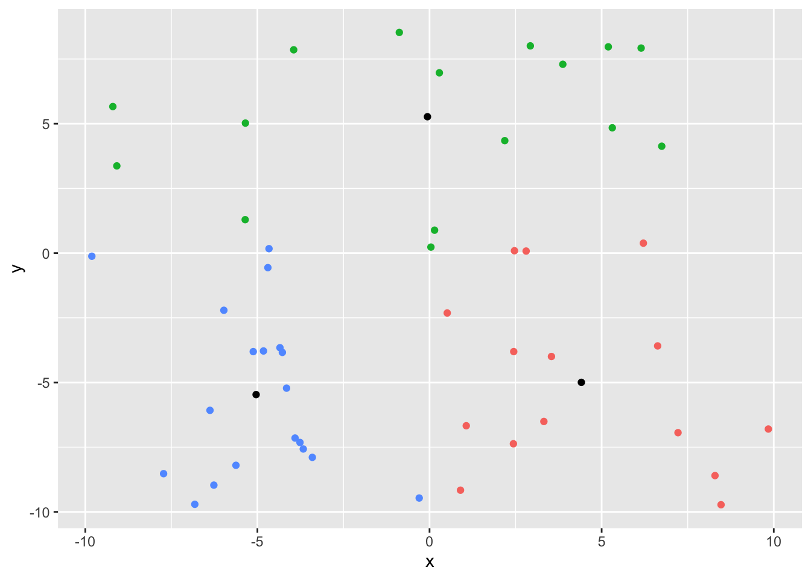
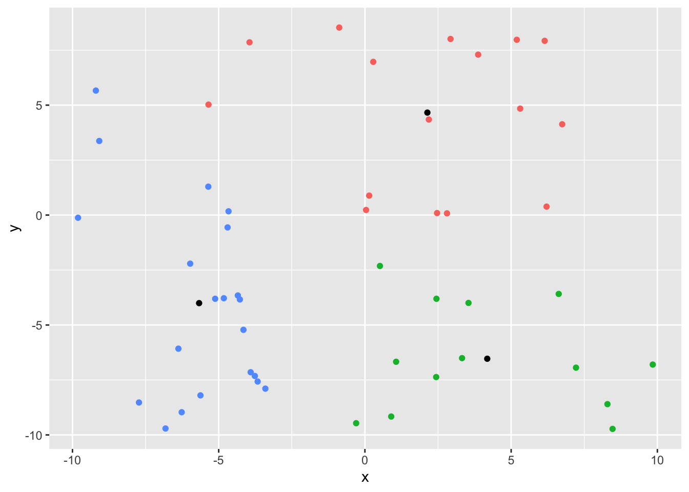

# setting up the problem
library(tibble)
library(dplyr)
library(ggplot2)
library(glue)
num_obs = 50
set.seed(1234)
df <- tibble(x = runif(num_obs, -10, 10), y = runif(num_obs, -10, 10))
# Step 1: choose number of centroids
k = 3
set.seed(441)
# step 2: assign randomly each point to a cluster
df <- df |> mutate(centroid = sample(1:k, n(), replace = TRUE))The purpose of this article is to get a deeper dive into Kmeans as an unsupervised machine learning algorithms. To see the algorithm at work on some financial data, you can use the post on kmeans and regime change.
As mentioned, Kmeans is an unsupervised learning algorithm, aiming to group “observations” based on their distances to a fixed number of “centroids” (aka: the fixed number is K). Each centroids is defined as the mean (in each dimension) of all the points belonging to that centroid. All the points belonging to a centroid makes a cluster: all the observations belonging to the k-centroid makes the k-cluster.
The objective is, for a given number of centroids (i.e. k), to minimize the total within-cluster variation or intra-cluster variation (distance from the observation to the centroid).
The standard Kmeans algorithm aims to minimize the total sum of the square distances (Euclidean distance) between observations and centroids.
First, we calculate the within-centroid sum of square: \[W(C_k) = \sum_{x_i \in C_k} (x_i - \mu_k)^2 \tag{1}\]
- \(x_i\) is the ith-observation in our dataset
- \(k\) is the number of centroids and \(C_k\) is the \(k^{th}\) centroid.
- \(\mu_k\) is the mean value of all the points assigned to the \(C_k\) cluster. You get the mean of the centroid is a p-dimensional vector comprising the mean of each of the variables.
The objective is to minimize the total within cluster variation, that is the total sum of the distance of each observations to its centroid and that for each of the k-centroids: \[tot.withinss = \sum_{k=1}^k W(C_k) = \sum_{k=1}^k \sum_{x_i \in C_k} (x_i - \mu_k)^2 \tag{2}\]
The Kmeans algorithms
Although there are 3 different ways to achieve the objective function, we’ll only explain the Hartingan-Wonk algorithm (1979).
It is noted that none of the algorithms guarantees a global minima. They all can be stuck into a local minima.
- Step 1 Choose the number of centroids
- Step 2: Cluster assignment step All observations are randomly assigned a cluster (the first k centroids). Another way to start is to randomly pick k observations that will be used as first centroids in the given hyperspace.
- Step 3: Calculate the centroid location Find the centroid location by calculating the mean value for each of the variables.
- Step 4: Find distance to each centroids Find the distance between each observation and each centroid. Assign the centroid with minimum distance to that observation.
- Step 5: Centroids update Recalculate the centroid location if there was a change of centroid mean. In other words: calculate a new mean for each centroids using all the \(x_i \in C_k\).
- step 6: Reaching convergence Repeat step 4 and 5. Once the new mean is established, we calculate again, for each observations its closest centroid. Then calculate again a new mean. We reiterate this step this until each given centroids are not changing anymore (or the change is below a given threshold).
Because of the initial random allocation of points to a cluster, results might differ. This is why in the native R kmeans() you can specify the nstart parameter and only the allocation providing the minimum distance will be kept.
Kmean - Hartingan-Wonk in practice.
We are going to define a couple of function we will use more than once.
calculate_centroid_mean <- function(df) {
yo <- df |> group_by(centroid) |>
summarize(mean_x = mean(x), mean_y = mean(y))
#print(yo)
return(yo)
}
total_within_cluster_distance <- function(df) {
yo <- df |>
mutate(distance = (x - centroid_loc$mean_x[centroid])^2 +
(y - centroid_loc$mean_y[centroid])^2)
return(sum(yo$distance))
}
# need to initialize an empty vector for the distance of the observation to a centroid
dist_centroid <- c()# Starting the iteration process
# step3:
## a: calculate mean of each centroids
centroid_loc <- calculate_centroid_mean(df)
## b: calculate sum of distance between each observation and its assigned cluster
print(glue('Initial sum of within-cluster distance is: ',
round(total_within_cluster_distance(df), 2)))Initial sum of within-cluster distance is: 3014.94rd = 1 # to keep track on how many round / loops we are doing
i = 0 # to keep track on how many observations have not changed their centroids
# we shall be running the loop until we have no more change of centroids
while (i < num_obs) {
i = 0 # we keep going with the process until no more change of centroids for all the observations
# Step 4: for each data point
for (obs in 1:num_obs) {
# for each centroid
for (centroid in 1:k) {
# find distance from the observation to the centroid
dist_centroid[centroid] = sqrt((df$x[obs] - centroid_loc$mean_x[centroid])^2 +
(df$y[obs] - centroid_loc$mean_y[centroid])^2)
# print(glue(' The distance from point ', obs, ' to centroid ', centroid, ' is ', round(dist_centroid[centroid], 2)))
}
# assign the observation to its new centroid (based on min distance)
prev_centroid = df$centroid[obs]
post_centroid = which.min(dist_centroid)
df$centroid[obs] = post_centroid #assign the new centroid
if (prev_centroid != post_centroid) {
# we recaluate the centroid
centroid_loc <- calculate_centroid_mean(df)
print(glue(' The initial centroid for point ', obs, ' was ',
prev_centroid, '. It is now ', post_centroid))
# print(centroid_loc)
} else {
i = i + 1
#print(' No change in centroid')
}
}
rd = rd + 1
print(glue('Round ', rd, ' The new sum of within-cluster distance is: ',
round(total_within_cluster_distance(df), 2)))
} The initial centroid for point 3 was 3. It is now 1
The initial centroid for point 5 was 2. It is now 3
The initial centroid for point 6 was 3. It is now 1
The initial centroid for point 8 was 1. It is now 2
The initial centroid for point 10 was 1. It is now 2
The initial centroid for point 11 was 1. It is now 2
The initial centroid for point 12 was 2. It is now 3
The initial centroid for point 13 was 2. It is now 3
The initial centroid for point 14 was 1. It is now 3
The initial centroid for point 15 was 2. It is now 3
The initial centroid for point 16 was 1. It is now 2
The initial centroid for point 19 was 1. It is now 3
The initial centroid for point 20 was 3. It is now 2
The initial centroid for point 21 was 1. It is now 3
The initial centroid for point 23 was 1. It is now 3
The initial centroid for point 24 was 1. It is now 2
The initial centroid for point 25 was 1. It is now 3
The initial centroid for point 26 was 2. It is now 1
The initial centroid for point 28 was 1. It is now 3
The initial centroid for point 30 was 3. It is now 2
The initial centroid for point 31 was 1. It is now 2
The initial centroid for point 32 was 1. It is now 2
The initial centroid for point 33 was 2. It is now 3
The initial centroid for point 34 was 1. It is now 2
The initial centroid for point 35 was 2. It is now 3
The initial centroid for point 37 was 3. It is now 2
The initial centroid for point 38 was 2. It is now 3
The initial centroid for point 39 was 3. It is now 1
The initial centroid for point 44 was 2. It is now 3
The initial centroid for point 45 was 2. It is now 3
The initial centroid for point 48 was 2. It is now 3
The initial centroid for point 49 was 2. It is now 3
Round 2 The new sum of within-cluster distance is: 1594.37
The initial centroid for point 2 was 3. It is now 1
The initial centroid for point 3 was 1. It is now 2
The initial centroid for point 5 was 3. It is now 1
The initial centroid for point 9 was 3. It is now 1
The initial centroid for point 14 was 3. It is now 1
The initial centroid for point 17 was 1. It is now 3
The initial centroid for point 28 was 3. It is now 1
The initial centroid for point 37 was 2. It is now 3
The initial centroid for point 41 was 3. It is now 1
The initial centroid for point 44 was 3. It is now 1
Round 3 The new sum of within-cluster distance is: 1146.17
The initial centroid for point 7 was 2. It is now 3
The initial centroid for point 12 was 3. It is now 1
The initial centroid for point 32 was 2. It is now 3
Round 4 The new sum of within-cluster distance is: 1081.9
The initial centroid for point 18 was 2. It is now 3
Round 5 The new sum of within-cluster distance is: 1071.19
Round 6 The new sum of within-cluster distance is: 1071.19print(centroid_loc)# A tibble: 3 × 3
centroid mean_x mean_y
<int> <dbl> <dbl>
1 1 4.41 -4.99
2 2 -0.0601 5.27
3 3 -5.04 -5.47ggplot(df, aes(x, y)) +
geom_point(aes(color = as.factor(centroid))) +
geom_point(data = centroid_loc, aes(x = mean_x, y = mean_y)) +
theme(legend.position = 'none')
yoo <- kmeans(df[, 1:2], centers = 3,
algorithm = 'Hartigan-Wong', nstart = 10)
yoo$tot.withinss[1] 1017.417library(broom)
df2 <- df
augment(yoo, df2) |>
ggplot(aes(x, y)) +
geom_point(aes(color = .cluster)) +
geom_point(data = as_tibble(yoo$centers), aes(x, y)) +
theme(legend.position = 'none')
The parameters
While using K-means, there are 3 main parameters one can tune.
- the number of clusters: this is the main one to tune to avoid both under-fitting (too low of a K) or over-fitting (to high of a K). If K = equal number of observation, of course the total within cluster variation will be 0 and minimized!
- the number of iteration
- the number of start
Number of clusters
The elbow method
The idea is to identify where does drop in the total within-cluster sum of square start to slowdown. Of course the total within-clusters sum of square decrease as the number of centroids increase. If we have n centroids (that is \(n = k\) - as many centroids as observations), the total within-cluster sum of square will be 0. And if we have only one centroid, the total within-one-cluster sum of square will be the sum of square of the mean of each of the variables.
So when does adding a centroid does not significantly reduce the total within-cluster sum of square.
The silhouette method
Number of iterations
Number of start
Vizualisation
A common trick is to use PCA and check the how well data are separated (in regards to their clusters) using the first 2 principal components dimensions.
Pro & Con
con
- You don’t always know in advance thee number of centroids. You can use the elbow method or the silhouette method to determine the numbers of centroids you want.
- because of the random initialization stage, results might not necessarily be reproducible. If results have to be reproduced, then you need to set a seed.